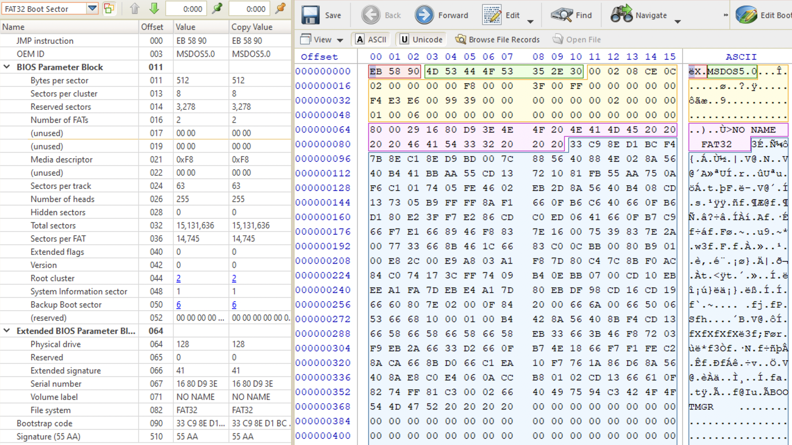
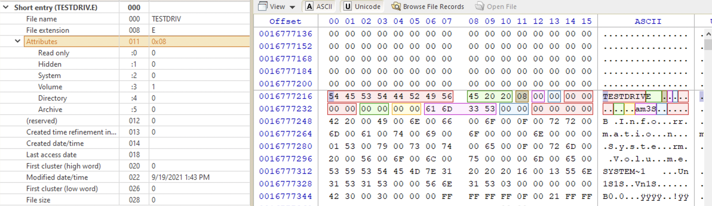
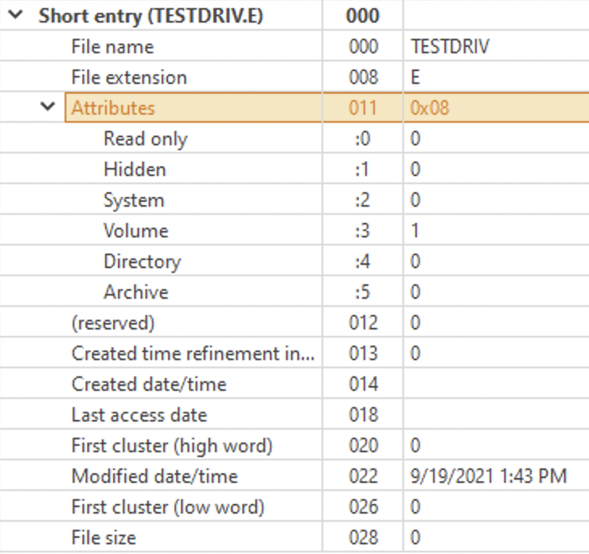
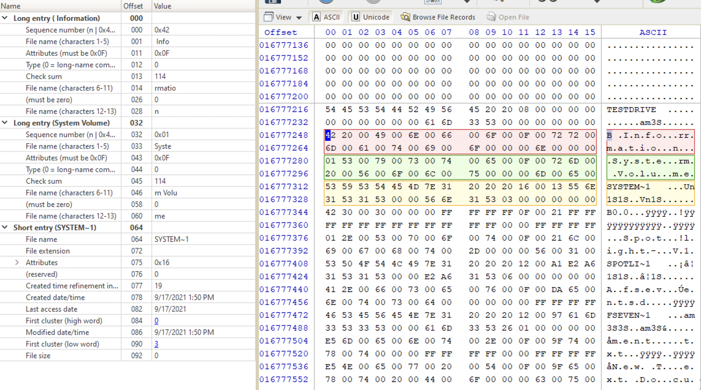
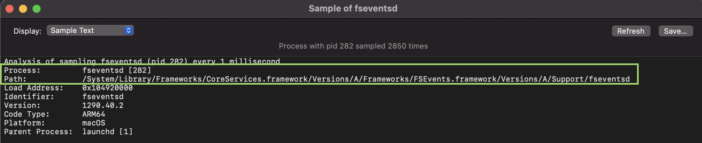

There are: file name, file metadata and the contents of the file itself. They are not in the same place. File metadata contains filename and also a ptr to the sector, where the file’s contents starts and size of data. Theoretically, we could change the file metadata to make it point to another cluster… 🤔
| Name | Cluster | size | last accessed |
|---|---|---|---|
| malware.txt | 654 | 80 | October 13, 2020 |
Essential data - can be trusted and non-essential cannot. But if ptr to cluster is called essential data, how we can trust it? Well, it’s much harder to tamper with.
https://apple.stackexchange.com/questions/321406/extract-hfs-hfsx-volume-from-dmg-file
open [path/to/dmg]
dd if="/dev/disk[number]" of="/extract/path/file.img"
fdisk -l file.img
dd if="path/to/file.img" bs=sector_size skip=sectors count=sectors >> output.hfs
Data structures and Flags
First, there must be some data structure identifier so that the CPU could know, how to read the subsequent data. For example, if we have the following:
1001 1000 1001 1110 1010 1100 1000 101
For example, the first 4 bits 0101 tell the CPU that the next bits should be interpreted as an image. Then, for example, there are other 4 bits 0011 that are 4 flags. Flag is a 1-bit value, indicating either true or false, or either exists or doesn't. This are flags, for example, that indicate: wether it’s black-and-white (0) or colored (1); wether the image is editable 1 or 0 etc. And then the file contents.
Consider the above binary sequence. To make it more compressed, convert it to hex: 4c 4f 56 45. What is this? That depends. If you tell CPU that it’s machine instructions, then it’s see this:
dec esp
dec edi
push esi
inc ebp
But what if you tell that it’s text? Then CPU sees… check out here.
Bootcode and Booting Process
File Systems
| Name | Partition size (min/max) | Cluster size (min/max) | File Max Size | fstab code |
|---|---|---|---|---|
| FAT16 | 16Mb/2Gb | 2Kb/32Kb | ||
| FAT32 | 260Mb/32Gb 🔍 | 2Kb/32Kb | ||
| NTFS 1.1 | 500Mb/8Gb 🔍 | 512B/8Kb | ||
| NTFS 3.0 | 500Mb/16EB | 512B/64Kb | ||
| HFS | ||||
| HFS+ | ||||
| APFS | ||||
| ext2 | 16Tb | 2Tb | ext2 |
|
| ext3 | 16Tb | 2Tb | ext3 |
|
| ext4 | 1Eb | 16Tb | ext4 |
|
| ReiserFS | 16Tb | 8Tb | resiserfs |
|
| JFS | 32Pb | 4Tb | jfs |
|
| XFS | 16Eb | 8Eb | xfs |
|
| Btrfs | 16Eb | 16Eb |
🔍 - this is from M. Graves' book “Digital Archeaology” book. I have not found any other information about max partition size on NTFS 1.1 and FAT32 max partition size is claimed to be 2,048 Gb, which doesn’t correlate with other resources.
FAT
Any FAT partition has two main parts: system area and data area. System area contains FAT boot record (every file system has a boot record), 1st FAT and 2nd FAT. FAT12 and FAT16 also have Root directory in the system area. Data area consists of Root directory in case of FAT32 and file and subdirectory data in clusters.
Versions
FAT12
For the cluster addressing there were 12 bits available, which is 2^12 clusters at most (4096 clusters).
FAT16
For the cluster addressing there were 16 bits available, which is 2^16 clusters at most (65536 clusters).
FAT32
For the cluster addressing there were 28 bits available (not 32), which is 2^28 clusters at most (268 435 456 clusters). 4 bytes were reserved. Unlike in FAT12 and FAT16 the Root directory is in the data area, giving more space for data.
ExFAT
Uses all 32 bits for cluster addressing. Thus, the maximum number of clusters is 2^32 which gives us 4 294 967 296 clusters to call.
Structure
Volume Boot Record
⚠️ Not the MBR!!!!
Located at sector 0 of the volume (❗️ not the physical sector 0). Starts with a jump instruction 3 bytes long at offset 0x0 (relative to VBR). Contains information about the volume (offset relative to the VBR start - size - name - description). Relevant information below:
0x3- 8 - OEM ID. Most likely MS-DOS5.0 for Win2000 and above.0x0B- 2- Bytes per sector (512 usually)0x0D- 1 - Sectors per cluster0x0E- 2 - Reserved sectors0x10- 1 - Number of FATs (2, one of them is for backup purposes)1C- 4 - Hidden sectors 🙈 (preceding the volume)- Total sectors (size of the volume)
0x16- 2 - Sectors per FAT (FAT12 and 16)0x24- 4 - Sectors per FAT (FAT32)0x2C- 4 - Starting cluster of the root dir (2nd usually)0x32- 2 - Back-up boot sector location (6th usually)0x43- 4 - Volume serial number. In case of thumbdrive, this serial number can be used to track the device across the PC and other systems.0x47- 11 - Volume name/label 🏷 (not user defined, “NONAME” usually)0x52- 8 - FS type
Here is the full information available:

Root Directory
The name speaks for itself. It’s the highest node in the dir structure of this volume, consists of 32 byte dir entries. Lists files and dirs in the root directory. FS stops reading these entries when it sees anything starting with 0x0. So, data written here won’t be seen by the OS and this is one of the ways to hide data. Types of root dir entries:
- volume name (user created)
- short file name (8 uppercase letters + “.” + 3 letters for extension)
- long file name. Can consist of several entries (each 32-bits). When the entry is the last in the set (1 set for each file), its sequence number starts with
4. If the file name is more than 8 characters, there will be more than one long enry. The last one contains the last characters + extension. See below the example of a long entry set for a file with the nameasdjasdlkjasldkjsalkdaskljdjaljdajd.txt.

Possible file attributes: hidden (0x02), read-only (0x01), system (0x04), volume label (0x08), directory (0x10) and archive (0x20). These attributes can be combined. Flags occupy just one byte and when there are more than one flag, their values are combined (like the access flags on Unix systems). Below is a screenshot of my test thumbdrive formatted as a FAT volume and its label’s short entry:

See the attributes. Only the bit for volume is set, which, given its position, has the value 0x08.
Short entry structure

The reserved bit above is for distinguishing between short and long file names. 0x00 for the long file name (not-8.3 compliant) and 0x10 for short file name (8.3 compliant).

Four bytes for date and time created (first two bytes for time 🕰 and the second two bytes for date 📆). The time bytes are first converted from the little-endian notation (two bytes flipped). In the example abobe, for the yellow short entry the created date and time 0x55 0x6E 0x31 0x53. Bytes 0x55 0x6E are for the time and 0x31 0x53 are for the date. Let’s take the time bytes 0x55 0x6E. Flip them to convert from the little-endian notation: 06E 0x55. Convert each nibble to a binary value: b0110, b1110, b0101, b0101. Now, write them in a row and separate with the following template in mind: 5 bits - 6 bits - 5 bits: b01101 b110010 b10101. The first five bits are for hours, the next 6 bits are for minutes and the last ones are for seconds. Then, each value is converted into a decimal separately to get us 13 hrs, 50 mins and 21 seconds in the end (see the above picture only shows hours and minutes). For the date 📆 value the template is 7-4-5 but the process is the same.
FAT high word
Start at 65536 and continue as power of two.
ExtX
2
No journaling
3
Same but + journaling
4
New FS
ReiserFS
Allows storing multiple files in a single sector. exclamation mark ❗️Unique to this FS!
XFS
Good for multimedia files.
HFS
HFS+
Since 1998, since macOS 8.1. Was replaced by APFS.
Didn’t natively support full disk encryption (FV2 was added later). Timestamps were only to-the-second. Support up to 4 billion files.
APFS
Advantages over HFS+:
- Optimized for Flash/SSD Storage.
- Full disk encryption is natively supported.
- Snapshot support.
- Timestamps are to-the-nanosecond.
- 9 quintillion files at most (18 zeroes).
Full support since iOS 10.3 and macOS High Sierra (10.13).
SANS Poster APFS File System Format Reference Sheet (SANS FOR518 Reference Sheet).
Apple 🍏. 2006 PowerPC -> Intel. They also moved to GUID partitioning (GPT). GPT replaces MPT at the end of MBR. The main difference between them is that MPT can only define 4 primary partitions, while GPT can have
Partitions and volumes are slightly different than for other FS. When we see a APFS disk, think in terms of volumes.
There are five entries (raws) there. One of them, the first, is most likely a general, main container. The other 4 are volumes: MacHD, Preboot, Recovery, VM (standard, but MacHD is usually named Macintosh HD).
The first one - container GUID. All the volumes have the same container GUID. Container GUID is similar to disk signature or the serial number that we find at offset 440 of the MBR when we are looking at HDDs from a Windows system.
APFS volumes are not fixed in size. Share space within a container. Unallocated space is pooled to all the volumes within. That’s why when analysing volumes there is no way to tell, which volume this unallocated space originated from (unlike on Win).
Timestamps
📆 Jan 1, 1970
Modified
Created
Accessed
On macOS type mount in Terminal to get all the disks mounted with their corresponding attributes. If you see a noatime attribute, it means Accessed attribute is not updated for that volume.
Changed
Added
Unique to APFS. Very useful for forensics since it differenciates between the file being actually created and it being copied from another media (USB, for example).
Metadata
FSEvents
Like $UsnJrnl. ❗️It keeps track of file ids, which is useful for sequencing events. Can be found /.fseventsd. Lot’s of gzip archives.
🔍 However, I couldn’t find it on my M1 (macOS Big Sur, 11.2.3). The daemon was running (checked with Activity Monitor). Grabbing the processes path on disk (search for
fseventsd, double-click, chooseSampleand get the path from the result)

python FSEParser_V3.3.py -s -t folder /.fseventsd -o /Users/sentinel/Desktop/FSEvents_Out
Keywords: Mount/Volume, Safari/Chrome (web search), Renamed/.trash (trash).
Lot’s of information, so, think well whether to process it or not, since it’ll take time.
⚠️ If you insert a FAT-formatted thumb drive into a macOS machine, it will create fervents.
Tools 🛠: FSEventsParser.
NTFS
Timestamps
📆 Jan 1, 1601
Modified, Accessed (``), Created, MFT Modified.
Sources: $Standart_Information, $Filename, $I30_Index.
Modified
Created
Accessed
Sometimes this option might be turned off. To check, check the NTFSLastAccessUpdate key at HKEY_LOCAL_MACHINE\SYSTEM\CurrentControlSet\Control\FileSystem in Windows Registry.
Can be changed with fsutils:
fsutil behavior set disablelastaccess [0|1|2|3]
# restart the PC
| Value | Description |
|---|---|
| 0 | User Managed, Last Access Time Updates Enabled |
| ❗️1 | ❗️User Managed, Last Access Time Updates Disabled |
| 2 (default) | System Managed, Last Access Time Updates Enabled |
| 3 | System Managed, Last Access Time Updates Disabled |
Changed
NTFS Metadata
These files cannot be opened from the user space, it’s maintained by NTFS driver. So, even if shown by Directory Snoop, you can’t open it on a live system. You can view the hex data though in DS-NTFS. Another option would be to make a disk image and carve the files. View some more information here [3].
\$Extend\$UsnJrnl
Journal change log for NTFS system. EVERYTHING! File and directory deletion, creation, encryption.
$LogFile
It’s a transaction journal of $MFT. Very similar to $UsnJrnl, but lives less. Tracks file creation, modification, renaming and deletion. May not exist, but since Windows Vista $UsnJrnl is there by default.
References
[1] Windows OS file system for 27 years
[2] Demystifying Mac Investigations: Mac vs. Windows Artifacts Comparison, Magnet Webinar
NTFS file system, Suhanov’s blog: [1] Playing with case-insensitive file names, [2] $STANDARD_INFORMATION vs. $FILE_NAME, [3] Exporting registry hives from a live system, [4] Trim and unallocated space, [5] OneDrive and NTFS last access timestamps, [6] Deceptive NTFS short file names, [7] You write to a logical drive when you read from it, [8] NTFS: large clusters, [9] NTFS: unallocated data marked as allocated, [10] How the $LogFile works?, [11] NTFS today, [12] Hibernation and NTFS, [13] The (in)consistency of last access timestamps, [14] The “Last Access” updates are almost back.
[3] How to acquire “locked” files from a running Windows system, By Pär Österberg Medina
[4] Opening $MFT file causes Access denied even if run as administrator, StackOverflow, answered by Eric Brown